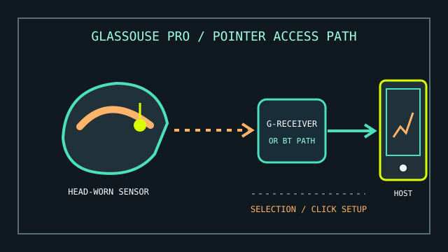

[ HANDS-FREE COMPUTER ACCESS // HEAD MOUSE ]
GlassOuse PRO
A wearable head-controlled pointing device that turns head movement into cursor movement for compatible host devices.

MODEL IDENTIFICATION: GlassOuse PRO head mouse. Confirm PRO generation, receiver/accessory bundle, firmware, and included mounting pieces; similarly named GlassOuse models have different interfaces.
Model specifications
| Catalog leaf | Adaptive and switch-access controls |
|---|---|
| Exact model / identifier | GlassOuse PRO (wearable head mouse; the package may include a G-Receiver and accessories). |
| Mechanism and primary specifications | Head movement is tracked and translated to pointer movement; manufacturer manuals describe wireless host connection and optional receiver/accessory functions for this product family. |
| Host interface and compatibility | Use the PRO manual to select the documented Bluetooth or supplied receiver path for the exact package. The host must support the mouse/HID function presented by that connection; supported actions and operating-system behavior vary. |
| Revision identification | Record model/version, receiver identifier, connection mode, firmware, calibration settings, and any compatible switch accessory used. |
Compatibility, setup & limitations
- Correct fit, orientation, and calibration are important: head position and voluntary movement range affect pointer accuracy and comfort.
- Cursor movement and selection are separate tasks. Confirm the chosen model’s selection/click method and the host’s dwell or switch-access settings; a visible pointer alone does not provide complete hands-free access.
- Bluetooth and USB-receiver modes are not interchangeable assumptions. Select only a path documented for the exact PRO hardware and host, and avoid attributing a receiver problem to cursor calibration.
- Not a general-purpose remote for every console, application, or mobile device: compatibility depends on the host’s support for the selected mouse interface and available software.
Preservation and service
Store the headset, receiver, charging cable, and optional switches as a labeled kit. Clean wearable contact surfaces using manufacturer guidance and keep the sensor free of debris.
Log connection mode, paired hosts, pointer settings, and user-specific mounting adjustments before service or reset.
Manufacturer sources
- GlassOuse — GlassOuse PRO user manualsManufacturer’s model-specific manual/download landing page.
- GlassOuse PRO English user manual (PDF)Setup, connection, operation, and troubleshooting reference.
Consult the included manual for exact hardware generation and connection modes; retailer bundles can differ.